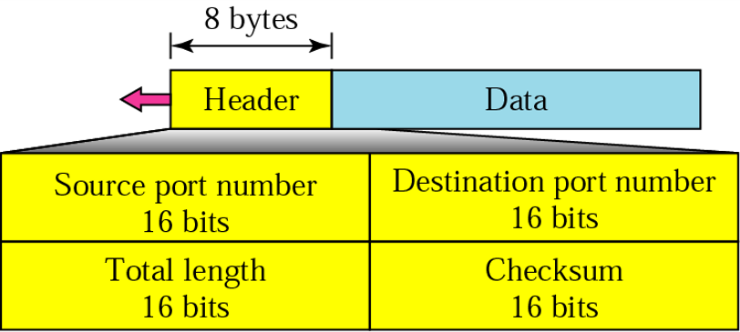

UDP is a connectionless, unreliable protocol that has no flow and error control. It uses port numbers to multiplex data from the application layer.
UDP is a simple, connectionless and unreliable transport-layer protocol.
It does not add anything to the services of IP except for providing process-to-process communication.
UDP performs a very limited error checking.
UDP packets are called Datagrams and have fixed size header of 8 Bytes.
In UDP a process (an application program) sends a chunk of bytes to UDP for delivery.
UDP adds its own header to this chunk of data, which is then called a user datagram, and delivers it to IP for transmission.
The process may deliver several chunks of data to UDP, but UDP treats each chunk independently without seeing any connection between them.
It is not usually used for process that needs to send bulk data, such as FTP.
The trivial File Transport Protocol (TFTP) includes flow and error control.
Multicasting capabilities are embedded in the UDP software but not in TCP software.
UDP is used for some route update protocols such as Routing Information Protocol (RIP).
UDP is used in conjunction with Real Time Transport Protocol (RTP) to provide a transport-layer mechanism for real-time data.
If the UDP is so powerless why would a process wants to use it?
If the UDP is so powerless why would a process wants to use it?
UDP is a very simple protocol with a minimum of overhead.
If a process wants to send a small message and does not care much about reliability, it can use UDP.
It takes much less interaction between sender and receiver.
UDP is also a convenient protocol for multimedia and multicasting applications.
UDP uses port numbers are the addressing mechanism in the transport layer.
TFTP
TFTP, or Trivial File Transfer Protocol, is a simple high-level protocol for transferring data servers use to boot diskless workstations, X-terminals, and routers by using User Data Protocol (UDP).
RTP
The Real-time Transport Protocol is a network protocol used to deliver streaming audio and video media over the internet, thereby enabling the Voice Over Internet Protocol (VoIP).
Datagrams

Source Port Number:
16-bit long field containing the port number used by the process running on the source. (value can be from 0 to 65,535).
Destination Port Number:
16-bits field containing the port number of the process running on the destination.
Length:
16-bit field defines the total length of the user datagram (Header + Data).
Checksum:
Used to detect errors (checksum) over entire datagram. (Header + Data).
Although UDP checksum should be based on the UDP header and payload (data coming from the application layer), but the designers have also added a part of IP header (only those fields not changing by the routers).
This ensures that those fields have not been changed from source to destination.
The calculation of the checksum and its inclusion in a user datagram is optional.
If the checksum is not calculated this field is filled with 0s.